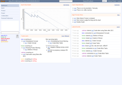

Kunagi
Dieser Artikel wurde für die folgenden Ubuntu-Versionen getestet:
Ubuntu 14.04 Trusty Tahr
Zum Verständnis dieses Artikels sind folgende Seiten hilfreich:
Kunagi  ist eine Webanwendung für das agile Projektmanagement nach der Scrum-Methode und eignet sich insbesondere für das Management von Softwareprojekten.
ist eine Webanwendung für das agile Projektmanagement nach der Scrum-Methode und eignet sich insbesondere für das Management von Softwareprojekten.
Kunagi wird von einem kleinen Team in Deutschland entwickelt. Die Webanwendung ist in Java und GWT implementiert.
Voraussetzungen¶
Das Programm benötigt das Java Development Kit (JDK) von Oracle und den Tomcat-Server . Die Installation von Java ist im Artikel Java/Oracle Java beschrieben.
Installation¶
Das Programm ist nicht in den offiziellen Paketquellen enthalten. Man kann aber ein Fremdpaket im .deb-Format herunterladen und manuell installieren (siehe auch Installation ). Das Fremdpaket hat Tomcat als Abhängigkeit eingetragen und installiert diesen mit (falls noch nicht erfolgt).
Hinweis!
Fremdpakete können das System gefährden.
Nach der Installation wird Tomcat mit Kunagi automatisch gestartet.
|  |
| Kunagi Dashboard |
Benutzung¶
Kunagi läuft als Webanwendung auf Tomcat und ist auf dem lokalen Rechner über http://localhost:8080/kunagi/ erreichbar.
Neue Benutzer können sich sofort selbst registrieren oder mittels OpenID direkt anmelden.
Konfiguration¶
Nach der Installation wird das Administratorkonto admin mit dem Kennwort geheim automatisch erzeugt. Mit diesem kann man sich anmelden und unter "System Configuration" grundlegende Einstellungen vornehmen.
| Abschnitt "Login" | |
| Konfigurationsparameter | Beschreibung |
| "Instance name" | Beliebiger Name für die Kunagi Installation |
| "Custom logo" | URL für ein eigenes Logo |
| "Login message" | Beliebiger Hinweistext, der auf der Anmeldeseite erscheint |
| "Register message" | Beliebiger Hinweistext, der auf der Registrierungsseite erscheint |
| Abschnitt "Authentication" | |
| Konfigurationsparameter | Beschreibung |
| "OpenID disabled" | Deaktivierung der Anmeldung mittels OpenID |
| "Allowed OpenID Domains" | Werden hier Domainnamen eingetragen, so können sich Benutzer per OpenID nur aus diesen Domains anmelden |
| "LDAP authentication", ... | Hier lässt sich ein LDAP Server eintragen, der für die Benutzeranmeldung verwendet werden soll. |
| Abschnitt "Installation" | |
| Konfigurationsparameter | Beschreibung |
| "Public URL" | Achtung!Hier wird die URL eingetragen, unter der Kunagi erreichbar ist. Dies ist für die korrekte Funktionsweise unbedingt erforderlich. |
| "Disable registration page" | Deaktivierung der Selbstregistrierung für neue Benutzer |
| "Disable project creation" | Deaktivierung der Möglichkeit für Benutzer neue Projekt anzulegen |
| "Users email is mandator" | Erzwingt bei neuen Benutzern die Eingabe einer E-Mail |
| "Default user password" | Standardkennwort, welches jedem Benutzer gegeben wird, wenn dieser vom Administrator erzeugt wird. Wird auch beim Zurücksetzen des Kennworts durch den Administrator verwendet. |
| "Check for updates" | Aktiviert ein Info-Symbol, welches aktiviert wird, sobald eine neue Kunagi-Version erscheint |
| "Data path" | Zeigt an, in welchem Verzeichnis alle Daten gespeichert werden |
| "Maximum file size (MB)" | Maximale Dateigröße bei hochgeladenen Dateien |
| Abschnitt "Email" | |
| Konfigurationsparameter | Beschreibung |
| "SMTP server", ... | Konfiguration eines SMTP E-Mail Servers, der für das Versenden verwendet werden soll. Notwendig für Info E-Mails an den Administrator und für die Verifizierung von E-Mail Adressen der Benutzer. |
| "Sender email" | E-Mail Adresse, die als Absender verwendet wird, wenn Kunagi E-Mails versendet |
| "Administrator email" | E-Mail Adresse des Administrators. Hierhin werden Info E-Mails verschickt. |
| Abschnitt "Google Integration" | |
| Konfigurationsparameter | Beschreibung |
| "Analytics Id" | Hier kann eine Google Analytics ID hinterlegt werden, um die Benutzung von Kunagi zu verfolgen. |
Projektmanagement mit Kunagi¶
Das Scrum-Team¶
Das Projektteam ernennt einen ProductOwner, einen ScrumMaster und das Entwicklerteam. Einen Projektmanager gibt es nicht. Der ProductOwner ist verantwortlich für den Erfolg des Projektes und somit für die Definition der Ziele und die Prioritätssteuerung der Aufgaben. Der ScrumMaster hilft dem Projektteam bei der Umsetzung und Anpassung des Scrum-Prozesses. Er ist für das Ausräumen von Hindernissen verantwortlich, die bei der Entwicklung stören. Das Entwicklerteam besteht aus allen Personen, die notwendig sind, die Software zu implementieren. Dazu gehören meist Entwickler und Tester. Das Entwicklerteam arbeitet selbstorganisiert.
Der ProductBacklog¶
| Kunagi Product Backlog |
Der ProductOwner erstellt einen sogenannten ProductBacklog. Dieser enthält Anforderungen an die Software in Form von User Storys. Nachdem das Entwicklerteam mit Hilfe von Planning Poker die einzelnen Storys geschätzt hat, kann der ProductOwner diese priorisieren. Dabei zieht er die für die Benutzer wertvollsten Storys mittels Drag'n'Drop nach oben. Die obersten Storys müssen auch möglichst detailliert beschrieben werden, während für die unteren eine grobe Beschreibung oder nur die Überschrift ausreicht.
Die Sprints¶
Die Entwicklung findet in so genannten Sprints statt. Das Team einigt sich auf eine feste Dauer von ein bis vier Wochen pro Sprint. Diese Dauer muss dann eingehalten werden. Die Sprints laufen dann in mehreren Phasen ab:
Sprint Planning¶
| Kunagi Whiteboard |
Das Entwicklerteam setzt sich mit dem ProductOwner zusammen und lässt sich die obersten Storys aus dem ProductBacklog detailliert erklären. Danach wählt das Entwicklerteam so viele Storys wie es meint in dem Sprint zu schaffen, aus dem ProductBacklog von ganz oben aus. Daraus entsteht der SprintBacklog. Zu jeder Story im SprintBacklog erstellt das Entwickerteam Aufgaben, die für die Umsetzung erledigt werden müssen. Dazu gehören oft Forschung, Modellierung, Programmierung, Test und Deployment.
Sprint¶
Das Entwicklerteam setzt die Storys aus dem SprintBacklog um, indem es die definierten Aufgaben abarbeitet. Neue Aufgaben können entstehen, bestehende wegfallen. Der ProductOwner darf weder Storys aus dem SprintBacklog entfernen noch welche hinzufügen. Der ScrumMaster beseitigt Hindernisse, die bei der Entwicklung stören. Das Ergebnis des Sprints ist ein demonstrierbares Inkrement der Software.
Täglich trifft sich das gesamte Team zum DailyScrum, einem fünfminütigem Stehmeeting, wo jeder die anderen kurz informiert, woran er gerade arbeitet.
Sprint Review¶
Das Entwicklerteam präsentiert das entwickelte Inkrement der Software. Der ProductOwner entscheidet, ob seine Storys entsprechend seiner Definition ausreichend umgesetzt sind. Ist das der Fall, werden die Storys abgehakt. Sind sie nicht zureichend umgesetzt, werden diese zurück im ProductBacklog neu einsortiert.
Sprint Retrospektive¶
Das ganze Team setzt sich zusammen und reflektiert über den vergangenen Sprint und einigt sich auf Änderungen im Scrum-Prozess für den nächsten Sprint.

 von Scrum.org (PDF)
von Scrum.org (PDF)- Erstellt mit Inyoka
-
 2004 – 2017 ubuntuusers.de • Einige Rechte vorbehalten
2004 – 2017 ubuntuusers.de • Einige Rechte vorbehalten
Lizenz • Kontakt • Datenschutz • Impressum • Serverstatus -
Serverhousing gespendet von